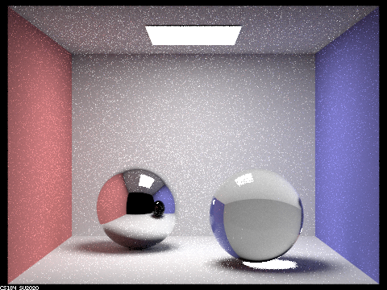

Overview
In this assignment, we build tools that allow our renders to capture details that one would expect in a photograph taken of a real-life scene. Out of the four choices for features to implement, we chose part 1 (mirror and glass materials) and part 4 (depth of field). In the former, we implement a new BSDF that captures the properties of glass and mirrors to reflect and refract incoming light. In the latter, we add depth-of-field to the render to simulate how a camera focuses only a certain distance away from the lens, with entities outside of this range out-of-focus. We can combine these to simulate a photograph of a scene containing glass and mirror spheres, as we demonstrate in the renders for part 4.
Given the smaller workload of this project compared to 3-1 and the shorter turnaround time required to meet the deadline, we completed the work for this assignment asynchronously. While previous assignments in this class have demonstrated the risks of asynchronous group work with interdependent tasks where one section is hard to test without the completion of another section, we found that the small size of this assignment kept this danger to a minimum.
Part 1. Mirror and Glass Materials
Show a sequence of six images of scene `CBspheres.dae` rendered with `max_ray_depth` set to 0, 1, 2, 3, 4, 5, and 100. The other settings should be at least 64 samples per pixel and 4 samples per light. Make sure to include all screenshots.

CBspheres.dae with -m 0 |
CBspheres.dae with -m 1 |

CBspheres.dae with -m 2 |

CBspheres.dae with -m 3 |
CBspheres.dae with -m 4 |
CBspheres.dae with -m 5 |

CBspheres.dae with -m 100 |
Point out the new multibounce effects that appear in each image.
In the image with 0 ray bounces, nothing is illuminated except the direct light sources. In the image with only direct illumination or 1 ray bounces, the walls and floor are illuminated. In the image with 2 ray bounces, the ceiling is illuminated, and the sphere begins to reflect the scene from the previous image. In the image with 3 ray bounces, light passes and exits through the glass sphere, and the mirror sphere reflects the scene with 2 ray bounces. In the image with 4 ray bounces, the sphere is correctly reflected by the mirror sphere. For the images with 5 and 100 ray bounces, the scene becomes slightly lighter.
Explain how these bounce numbers relate to the particular effects that appear. Make sure to include all screenshots.
In the image with 0 ray bounces, the entire image is dark because there are no light rays in the scene. In the image with 1 ray bounce, the walls and floor are illuminated, but the spheres and ceiling remain dark. This is due to the fact that there is no indirect illumination, which is the part that illuminates the spheres because the first ray bounce would only pass through them. In the image with 2 ray bounces, the ceiling is lightened because of the indirect illumination from the floor and other areas of the image. The mirror sphere will reflect the light that is bouncing off of the illuminated aspects of the previous image (i.e. the walls and the floor). In the image with 3 ray bounces, the glass sphere will display the room because the rays will pass through the entire ball. In the image with 4 bounces, the mirror will reflect the glass sphere because the rays will exit the sphere. While there is not much change in the images with 5, and 100 bounces, the image becomes mildly lighter due to an increase of rays bouncing and causing slightly more indirect illumination.
Part 4. Depth of Field
In a few sentences, explain the differences between a pinhole camera model and a thin-lens camera model.
A thin-lens camera model allows us to simulate the effects of looking at a scene through an actual lens. The pinhole camera model renders the entire scene as in-focus no matter how close or far it is from the camera, which gives away the fact that it is a 3D render easily. Rays are shot through at different points on the lens, and intersect at the same distance from the lens no matter where on the lens they passed through. If an object is placed at that distance, it will appear in-focus. Thin-lens lets us adjust both the focal range and the lens radius, which control the distance from the lens that is focused and the extent to which things away from the focal range are unfocused. Adjusting these two variables lets us simulate many lens designs without needing to adjust our model beyond the aforementioned variables.
Show a "focus stack" where you focus at 4 visibly different depths through a scene. Make sure to include all screenshots.
All renders for this subsection use lens radius 0.23 and vary the focal distance.
CBspheres.dae with -d 4.50. The front sphere is the sharpest part of the scene. |
CBspheres.dae with -d 4.75. The focus is in between the two spheres. |
CBspheres.dae with -d 5.00. The rear sphere is the sharpest part of the scene. |
CBspheres.dae with -d 5.50. The wall behind the two spheres is the sharpest part of the scene. |
Show a sequence of 4 pictures with visibly different aperture sizes, all focused at the same point in a scene. Make sure to include all screenshots.
All renders for this subsection use focal distance 5.0 (focusing the rear sphere) and vary the lens radius.
CBspheres.dae with -b 0.125. |
CBspheres.dae with -b 0.25. |
CBspheres.dae with -b 0.50. |
CBspheres.dae with -b 0.75. |
We can understand adjusting the lens radius as adjusting the extent to which elements that are outside the primary focal range (in this case, elements other than the rear sphere) are unfocused. With -b 0.125, the image is similar to how it was rendered in the pinhole lens model as elements outside the focal range are not significantly unfocused. By the time we reach -b 0.75, the front sphere is nearly unrecognizable while the rear sphere has not changed from the earlier renders.